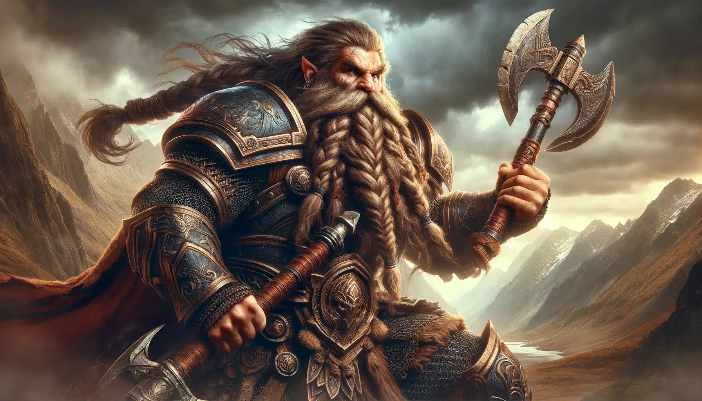

The Dwarves
Masters of Stone and Forge
Dwarves are stout, sturdy, and renowned for their mastery of smithing, mining, and crafting. Dwelling deep within mountain strongholds and subterranean halls, they are known to create some of the finest weapons, armor, and jewels in the fantasy realms.
These hardy folk are fiercely loyal to their clans and take great pride in their craftsmanship and warrior traditions. Their resilience in battle and their stout hearts have made them formidable defenders of their lands.
Culture and Traditions
Dwarven culture venerates ancestors, steeped in tales of heroism and endurance. Their halls are adorned with intricate carvings, precious gems, and massive stonework that stands the test of time.
Though often gruff in demeanor, dwarves possess deep wisdom and a rich oral tradition, passing down legends across generations. Their festivals celebrate craftsmanship, courage, and the forging of bonds among clans.
Their Role in Fantasy Lore
In many tales, dwarves serve as allies to elves and humans alike, often uniting to ward off darkness and tyranny. They bring unmatched skill in metalwork and engineering to their companions, as well as unwavering spirit in their quests.
Dwarven History
-
⛰️The Awakening of the First Dwarves beneath the Stoneheart Mountains.
-
🏰Founding of the First Hall — birthplace of dwarven civilization.
-
🌿First contact with elves; tentative trade begins.
-
💎Discovery of the Rune Mines glowing with magical runes.
-
⚔️The Great Orc War; dwarves unite to push back invading hordes.
-
🐉Dragons spotted nesting near Embercrag, causing unrest.
-
🛡️Age of the Mithril Kings begins under King Barun Flamebeard.
-
🔥Emberfall — a volcanic eruption shakes both dragons and dwarves.
-
🪓Rise of the Stoneguard — elite rune-warrior defenders of dwarvenkind.
-
📜Present Day — dwarves remain vigilant and resilient.